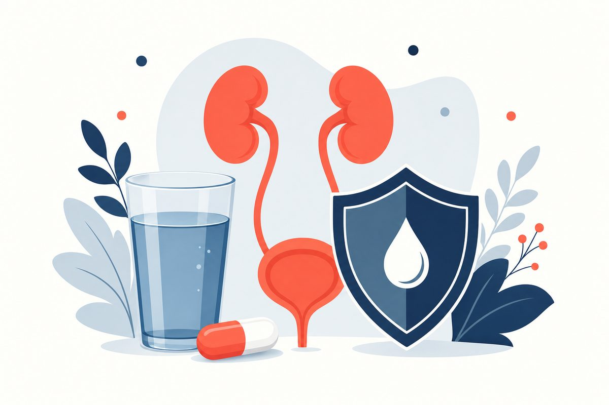

Key Takeaways
- For an uncomplicated bladder infection in a healthy, non-pregnant, premenopausal woman, CDC lists nitrofurantoin, trimethoprim-sulfamethoxazole (where local resistance is under 20%) and fosfomycin as appropriate first-line antibiotics.[1]
- Bladder infection symptoms most often go away within 24 to 48 hours after antibiotic treatment begins, according to MedlinePlus.[2]
- Amoxicillin and ampicillin should not be used for empirical treatment of a bladder infection because of relatively poor efficacy and very high resistance, according to the IDSA guideline.[3]
- The levofloxacin label, which carries a fluoroquinolone boxed warning, says to reserve it for uncomplicated urinary tract infection in patients who have no alternative treatment options.[4]
- Fever, chills, back or side pain, or vomiting with UTI symptoms can mean a kidney infection, and MedlinePlus advises contacting a provider right away.[2]

Which antibiotics treat an uncomplicated bladder infection?
For an uncomplicated bladder infection in a healthy, non-pregnant, premenopausal woman, CDC lists nitrofurantoin, trimethoprim-sulfamethoxazole (where local resistance is under 20%) and fosfomycin as appropriate first-line antibiotics.[1] Fluoroquinolones such as ciprofloxacin should be reserved for situations in which other agents are not appropriate.[1]
That CDC summary rests on the 2011 IDSA and ESCMID guideline,[1][3] which is still the most recent IDSA guideline on uncomplicated cystitis; IDSA's guideline list marks it archived, with an update in development.[5] The 2026 European Association of Urology (EAU) guideline, the most recent guideline cited here, names fosfomycin, pivmecillinam, nitrofurantoin or nitroxoline as first-line treatment for cystitis in women and lists trimethoprim-sulfamethoxazole only where local E. coli resistance is under 20%.[6] Your clinician chooses among these based on allergies, kidney function, recent antibiotic use and local resistance.
What is the usual antibiotic dose for a bladder infection?
The usual adult courses are nitrofurantoin 100 mg twice daily for 5 days, trimethoprim-sulfamethoxazole 160/800 mg twice daily for 3 days, or fosfomycin 3 g as a single dose.[3][6] The table lists guideline and label doses for reference; the prescribing clinician sets the actual dose.
| Antibiotic | Usual adult course | Notes |
|---|---|---|
| Nitrofurantoin monohydrate/macrocrystals (Macrobid) | 100 mg twice daily for 5 days[3][6] | Minimal resistance and efficacy comparable to 3 days of trimethoprim-sulfamethoxazole.[3] Not used to treat a kidney infection.[6] |
| Trimethoprim-sulfamethoxazole (TMP-SMX, Bactrim DS) | 160/800 mg (1 double-strength tablet) twice daily for 3 days[3][6] | Used empirically only if local resistance does not exceed 20% or the strain is known to be susceptible.[3] Not for anyone with a known hypersensitivity to trimethoprim or sulfonamides.[7] |
| Fosfomycin trometamol (Monurol) | 3 g as a single dose[3][6] | Convenient, but appears to have inferior efficacy compared with standard short-course regimens.[3] Not used to treat a kidney infection.[6] |
| Pivmecillinam (Pivya) | 185 mg three times a day for 3 to 7 days[8] | FDA-approved in 2024 for women 18 and older with uncomplicated UTI.[8] Not used to treat a kidney infection.[6] |
How well do they work? In the IDSA guideline's summary of trials, estimated clinical cure about 5 to 9 days after treatment was 93% for nitrofurantoin, 93% for trimethoprim-sulfamethoxazole and 91% for fosfomycin, with the caution that these rates should not necessarily be compared across agents because the trials differed.[3]
How fast do UTI antibiotics work?
Bladder infection symptoms most often go away within 24 to 48 hours after treatment begins, according to MedlinePlus.[2] A kidney infection is slower: it may take 1 week or longer for symptoms to go away.[2]
MedlinePlus advises finishing all of the antibiotic even if you feel better, because a stopped course can let the infection return and be harder to treat.[2]
What if UTI symptoms don't improve on antibiotics?
Most bladder infection symptoms go away within 24 to 48 hours after treatment begins.[2] If yours are not clearly better by then, this guide's standard is to get re-evaluated the same day rather than wait out the course, and fever, chills, back or side pain, or vomiting at any point mean contacting a provider right away.[2]
A urine culture helps here. The EAU guideline recommends a culture when symptoms do not resolve, or come back within four weeks after treatment, and when symptoms are atypical.[6] MedlinePlus also advises contacting your provider if UTI symptoms come back shortly after antibiotic treatment.[2] Persistent symptoms can also point to a different diagnosis: a history of vaginal discharge or vaginal irritation makes a UTI less likely.[9]
Which antibiotics are usually not used for a UTI?
Amoxicillin and ampicillin should not be used to treat a bladder infection empirically, given their relatively poor efficacy and the very high prevalence of resistance to them worldwide.[3] The EAU guideline likewise says aminopenicillins are no longer suitable for cystitis.[6]
- Amoxicillin or ampicillin: not recommended for empirical treatment.[3][6]
- Cefdinir and other beta-lactams (amoxicillin-clavulanate, cefaclor, cefpodoxime): appropriate only when the recommended agents cannot be used; beta-lactams generally have inferior efficacy and more adverse effects than other UTI antibiotics.[3] EAU lists cephalosporins as alternatives, not first-line.[6]
- Doxycycline: not among the first-line or alternative antibiotics for cystitis in the CDC summary, the IDSA guideline recommendations or the EAU cystitis table.[1][3][6]
Why are ciprofloxacin and levofloxacin not the first choice?
Fluoroquinolones work, but their FDA labeling carries a boxed warning for disabling and potentially irreversible serious adverse reactions, including tendinitis and tendon rupture, peripheral neuropathy and central nervous system effects.[4] The levofloxacin label says to reserve it for uncomplicated urinary tract infection in patients who have no alternative treatment options.[4]
The IDSA guideline found fluoroquinolones highly efficacious in 3-day regimens but recommended reserving them for important uses other than acute cystitis.[3] The EAU guideline says not to use fluoroquinolones to treat cystitis.[6]
Are there newer antibiotics for UTI?
Yes: pivmecillinam (Pivya) was approved in the U.S. in 2024 for women 18 and older with uncomplicated UTI,[8] and gepotidacin (Blujepa) was approved in 2025 for female patients 12 and older weighing at least 40 kg with uncomplicated UTI.[10]
In two trials against nitrofurantoin, gepotidacin was non-inferior in both and superior in EAGLE-3, with therapeutic success of 58.5% versus 43.6%.[11] Its label advises avoiding it in people with a history of QTc prolongation or relevant heart disease, or who take drugs that prolong the QTc interval.[10] Neither drug is on the CDC first-line list above.[1]
Can a UTI go away without antibiotics?
Sometimes, but less reliably than with treatment. In the placebo groups of three randomized trials, the share of women who were symptom free or improved rose to 42% over the first 9 days, while up to 39% had failed to improve by 6 weeks.[12]
The EAU guideline notes that clinical success is significantly more likely in women treated with antimicrobials than with placebo.[6] Waiting is a decision to make with a clinician, not a reason to delay care when symptoms are worsening.
Do you need a urine test before treatment?
Not always: the EAU guideline recommends diagnosing cystitis in women with no other risk factors for systemic infection from a focused history of urinary symptoms and the absence of vaginal discharge.[6] Dysuria and frequency without vaginal discharge or irritation raise the probability of UTI to more than 90%.[9]
A urine culture is recommended for suspected systemic infection, symptoms that do not resolve or recur within four weeks, atypical symptoms, high risk of resistant bacteria, and pregnancy.[6] The 2025 AUA/CUA/SUFU update on recurrent UTI adds a greater understanding of the value of a negative urinalysis in ruling out UTI.[13]
What are the symptoms of a UTI?
Classic bladder infection symptoms are painful urination, frequent voiding of small amounts and urgency.[1] Fever, chills, side or back pain, or nausea and vomiting suggest the infection may have reached the kidneys.[2]
For the full symptom picture, see UTI symptoms in women.
Is it a UTI or a vaginal infection?
A history of vaginal discharge or vaginal irritation makes a UTI less likely, while painful urination with frequency and no discharge makes it very likely.[9] When burning is the main symptom, burning when you pee walks through UTI, yeast, BV and other causes.
Why do UTIs keep coming back?
The 2025 AUA/CUA/SUFU guideline update on recurrent UTI expands non-antibiotic options for prevention.[13] The EAU guideline recommends vaginal estrogen after menopause and methenamine hippurate, gives only a weak recommendation to D-mannose, and keeps antibiotic prophylaxis for when non-antimicrobial measures have failed; see D-mannose for UTIs for that evidence.[6]
What can be treated by video, and what needs in-person care?
A typical bladder infection in a non-pregnant woman without risk factors for a more serious infection can usually be diagnosed from a focused symptom history, which is what makes video care workable.[6] Fever, chills, back or side pain, or vomiting mean contacting a provider right away,[2] and this guide's standard is that they need in-person care.
- Usually suitable for a video visit: new burning, frequency and urgency in a non-pregnant adult woman, with no fever, back or side pain, or vomiting, and no vaginal discharge.[6][2]
- Needs in-person care (this guide's standard): fever, chills, back or side pain or vomiting, which MedlinePlus says warrant contacting a provider right away;[2] pregnancy, which calls for a urine culture;[6] symptoms that persist or come back within four weeks of treatment, which call for a urine culture;[6] and any urinary symptoms in a man.
- Hospital level: being too sick to take medicine by mouth or drink enough fluids.[2]
TeleDirectMD's UTI care by video is limited to non-pregnant adult women (18 and older) with uncomplicated symptoms. TeleDirectMD does not treat UTIs in men; men with urinary symptoms should be seen in person.
When is a UTI an emergency?
A UTI is an emergency when it causes signs of sepsis, a life-threatening medical emergency,[14] or leaves you too sick to take medicine by mouth or drink enough fluids, which can need hospital care.[2]
- Fever with shaking chills and pain in your back or side, which can signal a kidney infection[2]
- Nausea or vomiting that keeps you from holding down fluids or medicine[2]
- Signs of sepsis, such as confusion, a high heart rate, or shortness of breath[14]
- Fever during pregnancy, which can need hospital care,[2] or any other urinary symptoms during pregnancy
- Visible blood in your urine
- Severe pain or being unable to urinate
Get in-person care the same day for fever on its own or back or side pain on its own (MedlinePlus advises contacting a provider right away for these),[2] urinary symptoms in a man, symptoms that are not improving 48 hours after starting an antibiotic, or symptoms that come back soon after treatment (MedlinePlus advises contacting your provider).[2]
This red-flag list matches When is a UTI an emergency? Sending fever with chills and back or side pain, visible blood in the urine, severe pain or inability to urinate, and any urinary symptoms in pregnancy to the emergency room, and the same-day in-person timing above, are Dr. Bhavsar's deliberately cautious standard for these guides; the cited sources for those signs advise contacting a provider right away.
Sepsis is the body's extreme response to an infection and a life-threatening medical emergency, and the urinary tract is one of the places where infections that lead to sepsis most often start.[14]
Related UTI guides
When is a UTI an emergency? · UTI symptoms in women · Burning when you pee · Does D-mannose prevent UTIs? · Does AZO treat a UTI? · How accurate are at-home UTI tests? · Reading AZO UTI test strip results · Telehealth for UTIs: the evidence
Frequently Asked Questions
For an uncomplicated bladder infection in a healthy, non-pregnant woman, nitrofurantoin, trimethoprim-sulfamethoxazole (where local resistance is under 20%) and fosfomycin are appropriate first-line choices.[1] The best one for you depends on allergies, kidney function, recent antibiotics and local resistance, which is why a clinician chooses it.
Most bladder infection symptoms go away within 24 to 48 hours of starting treatment.[2] If yours are not clearly better by then, this guide's standard is to get re-evaluated the same day, and a urine culture is recommended when symptoms do not resolve or come back within four weeks after treatment.[6]
Amoxicillin is not recommended for treating a bladder infection empirically. The IDSA guideline says amoxicillin or ampicillin should not be used given relatively poor efficacy and very high resistance.[3]
Sometimes. In placebo groups of three trials, up to 42% of women were symptom free or improved within 9 days, but up to 39% had not improved by 6 weeks.[12]
Not always. For women without risk factors for a more serious infection, the EAU guideline recommends diagnosing cystitis from a focused symptom history and the absence of vaginal discharge, with a urine culture for situations such as atypical, persistent or recurrent symptoms or pregnancy.[6]
Signs of sepsis such as confusion or a high heart rate are a medical emergency,[14] and vomiting that keeps you from holding down fluids or medicine can need hospital care.[2] As a cautious standard, this guide also sends fever with shaking chills and back or side pain, and urinary symptoms in pregnancy, to the emergency room.
Recurrent UTIs have several contributing factors, and prevention options have grown: the 2025 AUA/CUA/SUFU update expands non-antibiotic options.[13] The EAU guideline recommends vaginal estrogen after menopause and methenamine hippurate, with antibiotic prophylaxis when other measures have failed.[6]
Video visits with a board-certified physician for uncomplicated bladder infections in non-pregnant adult women are available through TeleDirectMD. TeleDirectMD is a telehealth practice. This guide is educational, is not sponsored, and contains no affiliate links.
How to cite this guide
Bhavsar P. UTI Treatment: Which Antibiotics Work and How Fast. TeleDirectMD Health Guides. Last reviewed August 30, 2026. https://teledirectmd.com/health-guides/urinary-tract-infection-uti-guide/
References
- Centers for Disease Control and Prevention. Outpatient Clinical Care for Adults (Antibiotic Prescribing and Use). Last reviewed April 16, 2024. Accessed November 27, 2026. https://www.cdc.gov/antibiotic-use/hcp/clinical-care/adult-outpatient.html
- MedlinePlus Medical Encyclopedia. Urinary tract infection - adults. US National Library of Medicine. Review date July 22, 2026. Accessed November 27, 2026. https://medlineplus.gov/ency/article/000521.htm
- Gupta K, Hooton TM, Naber KG, et al. International clinical practice guidelines for the treatment of acute uncomplicated cystitis and pyelonephritis in women: a 2010 update by the Infectious Diseases Society of America and the European Society for Microbiology and Infectious Diseases. Clin Infect Dis. 2011;52(5):e103-e120. PMID: 21292654. doi:10.1093/cid/ciq257. https://pubmed.ncbi.nlm.nih.gov/21292654/
- U.S. Food and Drug Administration. LEVAQUIN (levofloxacin) tablets prescribing information, including boxed warning. Revised June 2020. Accessed November 27, 2026. https://www.accessdata.fda.gov/drugsatfda_docs/label/2020/020634s073lbl.pdf
- Infectious Diseases Society of America. Practice guidelines: A-Z list (listing for "Uncomplicated Cystitis and Pyelonephritis (UTI)", 2011, marked Archived and In Development). Accessed November 27, 2026. https://www.idsociety.org/practice-guideline/all-practice-guidelines/
- European Association of Urology. EAU Guidelines on Urological Infections, 2026 edition, chapter 3 "The Guideline," section 3.4 Cystitis in women. Accessed November 27, 2026. https://uroweb.org/guidelines/urological-infections/chapter/the-guideline
- DailyMed (National Library of Medicine). BACTRIM (sulfamethoxazole and trimethoprim) DS tablets and tablets prescribing label, Sun Pharmaceutical Industries. Revised December 2024. Accessed November 27, 2026. https://dailymed.nlm.nih.gov/dailymed/fda/fdaDrugXsl.cfm?setid=f59d0c04-9c66-4d53-a0e1-cb55570deb62&type=display
- U.S. Food and Drug Administration. PIVYA (pivmecillinam) tablets prescribing information. Initial U.S. approval 2024; revised April 2024. Accessed November 27, 2026. https://www.accessdata.fda.gov/drugsatfda_docs/label/2024/216483s000lbl.pdf
- Bent S, Nallamothu BK, Simel DL, Fihn SD, Saint S. Does this woman have an acute uncomplicated urinary tract infection? JAMA. 2002;287(20):2701-2710. PMID: 12020306. doi:10.1001/jama.287.20.2701. https://pubmed.ncbi.nlm.nih.gov/12020306/
- U.S. Food and Drug Administration. BLUJEPA (gepotidacin) tablets prescribing information. Initial U.S. approval 2025; revised March 2025. Accessed November 27, 2026. https://www.accessdata.fda.gov/drugsatfda_docs/label/2025/218230s000lbl.pdf
- Wagenlehner F, Perry CR, Hooton TM, et al. Oral gepotidacin versus nitrofurantoin in patients with uncomplicated urinary tract infection (EAGLE-2 and EAGLE-3): two randomised, controlled, double-blind, double-dummy, phase 3, non-inferiority trials. Lancet. 2024;403(10428):741-755. PMID: 38342126. doi:10.1016/S0140-6736(23)02196-7. https://pubmed.ncbi.nlm.nih.gov/38342126/
- Hoffmann T, Peiris R, Mar CD, Cleo G, Glasziou P. Natural history of uncomplicated urinary tract infection without antibiotics: a systematic review. Br J Gen Pract. 2020;70(699):e714-e722. PMID: 32958533. doi:10.3399/bjgp20X712781. https://pubmed.ncbi.nlm.nih.gov/32958533/
- Ackerman AL, Bradley M, D'Anci KE, et al. Updates to recurrent uncomplicated urinary tract infections in women: AUA/CUA/SUFU guideline (2025). J Urol. 2026;215(1):3-12. PMID: 40905426. doi:10.1097/JU.0000000000004723. https://pubmed.ncbi.nlm.nih.gov/40905426/
- Centers for Disease Control and Prevention. About Sepsis. Reviewed August 17, 2026. Accessed November 27, 2026. https://www.cdc.gov/sepsis/about/index.html